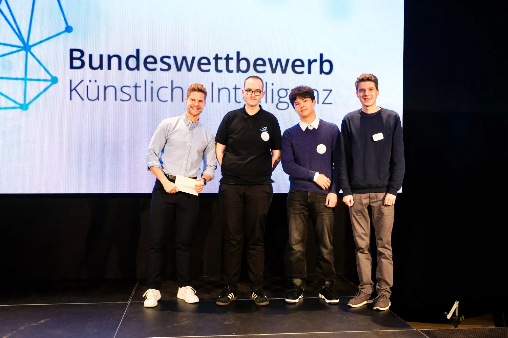
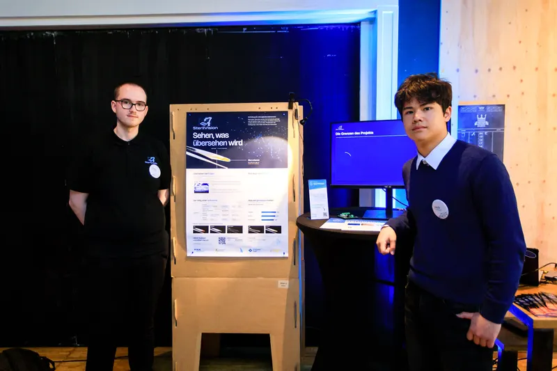
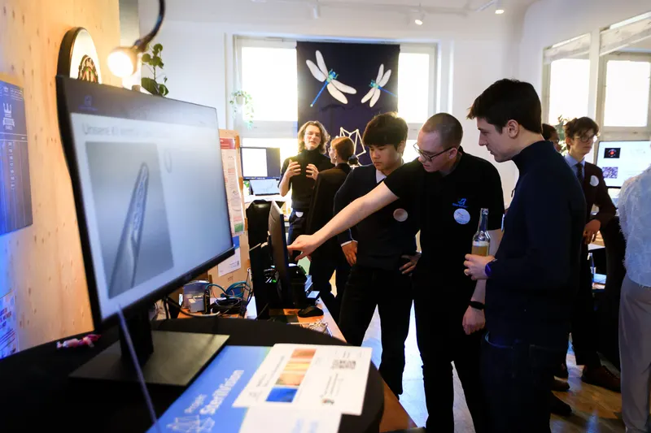
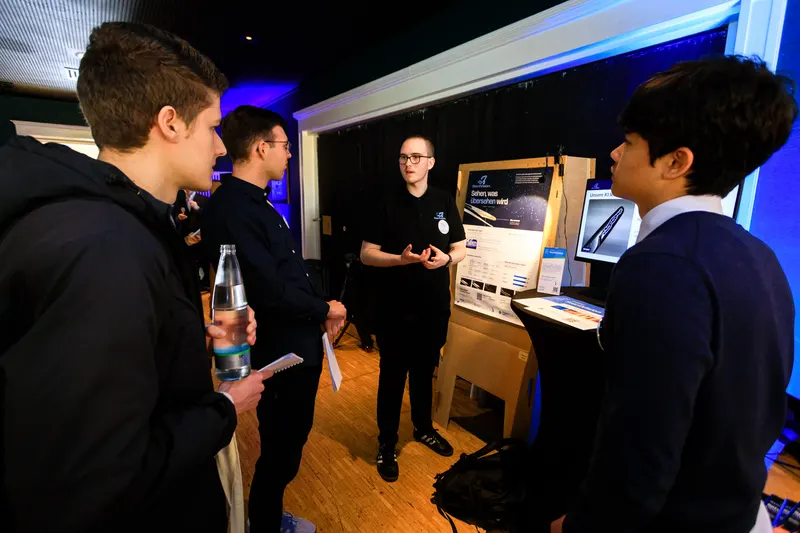
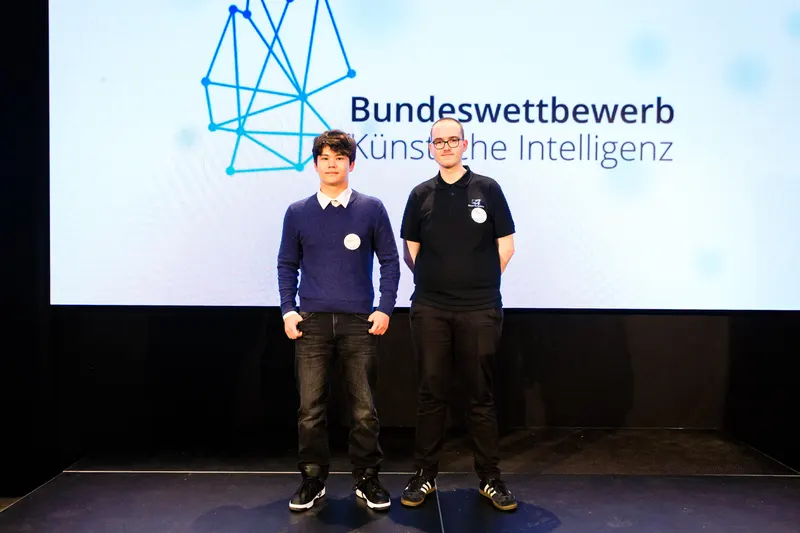

In den Medien
Preise, Fernsehen und Radio. Alles, was bisher über SterilVision berichtet wurde, an einem Ort.
Bundeswettbewerb Künstliche Intelligenz · Finale in Tübingen · 13. November 2026
Sonderpreis „No risk, no fun!“
Beim Finale des Bundeswettbewerbs Künstliche Intelligenz hat SterilVision den Sonderpreis „No risk, no fun!“ erhalten. Die Jury zeichnete damit unsere besonderen Leistungen im Projekt aus. Der Preis ist mit 750 Euro dotiert.
Zum Bundeswettbewerb KI




NDR · NDR 1 Welle Nord und ndr.de · 13. November 2026
„Dithmarscher Finalist im KI-Bundeswettbewerb“
Der NDR berichtet über SterilVision aus Hemmingstedt im Kreis Dithmarschen: ein Gerät, das OP-Besteck fotografiert und mit Künstlicher Intelligenz auf Blut, Proteinreste und Kratzer prüft. Entwickelt in Kooperation mit dem Westküstenklinikum und dem Universitätsklinikum Schleswig-Holstein. Gesendet in den Nachrichten für Schleswig-Holstein auf NDR 1 Welle Nord.
Artikel bei ndr.de lesen„Meist wird das derzeit per Hand gemacht. Und gerade unter Zeitdruck passieren Fehler.“
Mitteldeutscher Rundfunk (MDR) · Sachsenspiegel · 12. November 2026
„KI-Tüftler aus Sachsen stellt medizinische Anwendung vor“
Der Beitrag zeigt SterilVision beim Bundeswettbewerb Künstliche Intelligenz. Zwei 17-Jährige und die Frage, wie Instrumente vor der OP sicherer geprüft werden können.
In der ARD Mediathek ansehenSie möchten über SterilVision berichten? Wir schicken gern Fotos und Informationen zum Projekt.
Kontakt aufnehmen